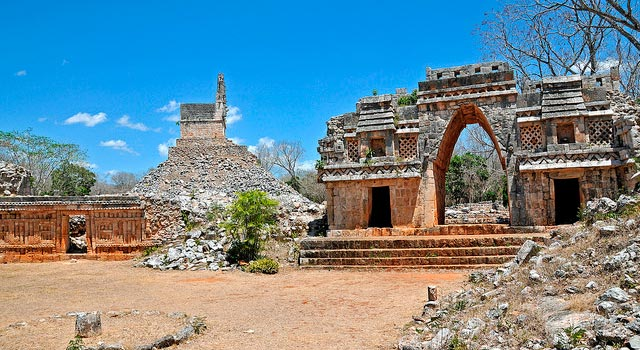

Labná
Oxkutzcab, Yucatán
Labná está en el sudoeste del estado Yucatán al sur de Uxmal aproximadamente a 29 km del mismo;
formando parte de la denominada zona Puuc.
Dentro del sitio arqueológico podemos encontrar un palacio (El Palacio) de dos pisos. Con una longitud de 120 metros, es uno de los edificios más grandes en la montañosa región Puuc. Desde El Palacio, hay un sacbé, un camino ceremonial de piedra, que llega hasta un arco elaboradamente decorado (El Arco). Esta estructura tiene una anchura de 3 metros y una altura de 6 metros. Los relieves están en condiciones buenas. Al lado del Arco se erige El Mirador, que es un templo construido sobre una pirámide. La zona es relativamente pequeña. Se estima que la ciudad tuvo una extensión de 2,2 km² y se ha calculado que pudo alojar una población de 3000 habitantes o quizá un poco más.
Dentro del sitio arqueológico podemos encontrar un palacio (El Palacio) de dos pisos. Con una longitud de 120 metros, es uno de los edificios más grandes en la montañosa región Puuc. Desde El Palacio, hay un sacbé, un camino ceremonial de piedra, que llega hasta un arco elaboradamente decorado (El Arco). Esta estructura tiene una anchura de 3 metros y una altura de 6 metros. Los relieves están en condiciones buenas. Al lado del Arco se erige El Mirador, que es un templo construido sobre una pirámide. La zona es relativamente pequeña. Se estima que la ciudad tuvo una extensión de 2,2 km² y se ha calculado que pudo alojar una población de 3000 habitantes o quizá un poco más.
Costo por accesso: Si